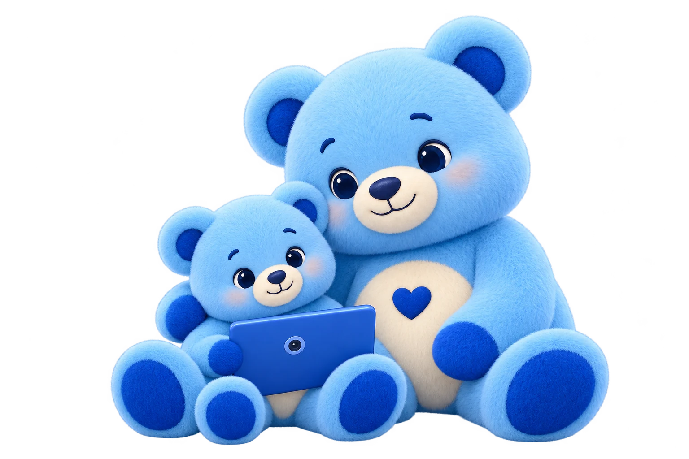

Học qua thực hành
Kết hợp bài học, camera, quiz và ôn tập trong cùng một hành trình.
Đã có trong prototypeMột hành trình học ngôn ngữ ký hiệu gần gũi hơn.
Để mỗi người có thêm một cách thấu hiểu nhau.
Được phát triển bởi Tứ Trụ Core
Đại học FPT Đà Nẵng
Một nền tảng.
Nhiều cách kết nối.
Một cuộc trò chuyện có thể bắt đầu từ lời nói.
Cũng có thể bắt đầu từ đôi tay.
Người học cần một nơi để bắt đầu. Gia đình cần một cách để đồng hành. Và việc học cần nhiều hơn những lần chỉ xem rồi tự làm theo.
Nguồn học phân tán, khoảng cách và chi phí khiến việc tiếp cận chưa thật dễ dàng.
Xem hướng dẫn là bước đầu. Người học còn cần được thử, đối chiếu và luyện lại.
Một lộ trình rõ và sự khích lệ từ gia đình có thể giúp hành trình bớt đơn độc.
Quan sát, thực hành rồi ôn lại.
Một vòng học nhỏ, có thể trở thành
thói quen kết nối mỗi ngày.
Chọn từng bước để khám phá
Quan sát dáng tay. Thử lại thật chậm.
Quan sát ảnh mẫu và hướng dẫn từng bước.
Minh hoạ trải nghiệm từ prototype. AI hiện hỗ trợ dáng tay tĩnh A–F và số 0–9 trong phần luyện miễn phí; chưa đánh giá hội thoại hay chuyển động.
Học một ký hiệu mới. Cùng nhau thực hành.
Và nhìn thấy những bước tiến nhỏ mỗi ngày.

TOGETHER IS A GOOD PLACE TO START. ♡Từ một prototype đến một nền tảng học VSL có chiều sâu.
Đây là những hướng VSign đang xây dựng và hướng tới.
Kết hợp bài học, camera, quiz và ôn tập trong cùng một hành trình.
Đã có trong prototypeHướng tới nội dung VSL vùng miền, được đồng sáng tạo và thẩm định cùng chuyên gia.
Định hướng phát triểnGiúp phụ huynh nhìn thấy hoạt động học và cùng khích lệ những nỗ lực nhỏ.
Đã có trong prototypeLộ trình dự kiến trong 24 tháng.
Kiểm chứng từng bước, phát triển
dựa trên phản hồi thực tế.
Hoàn thiện ý tưởng, xây cộng đồng hạt giống và chuẩn bị dữ liệu, nội dung cho MVP.
BUILDThử nghiệm với người học, thu nhận phản hồi và cải thiện trải nghiệm sản phẩm.
VALIDATEPhát triển cộng đồng, tổ chức hoạt động trải nghiệm và tìm kiếm đối tác phù hợp.
CONNECTHướng tới các địa phương mới, mở rộng nội dung và hệ sinh thái đồng hành.
EXPAND